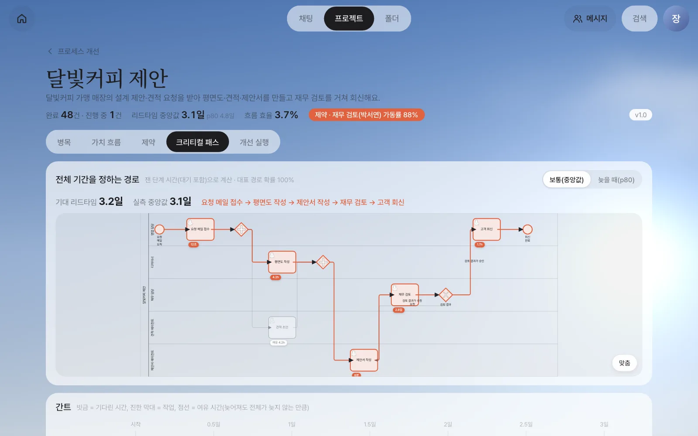
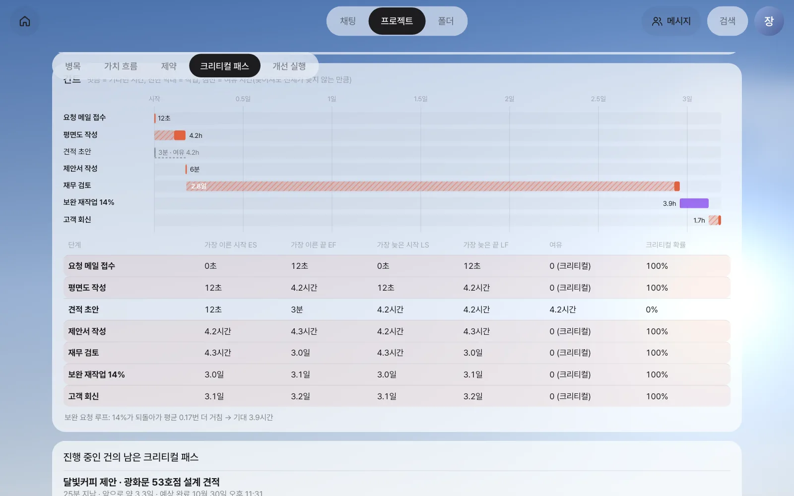
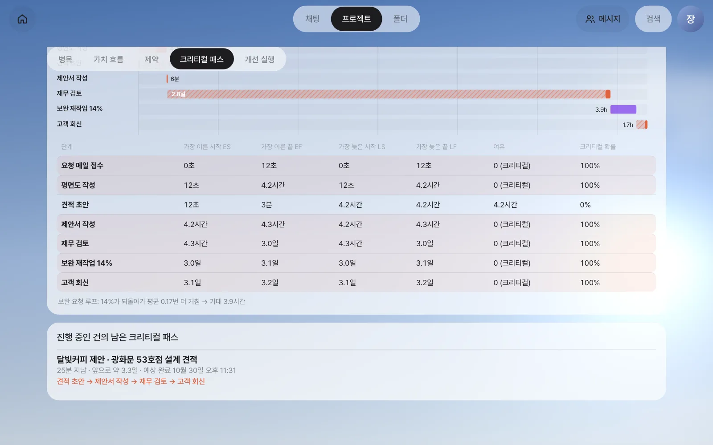
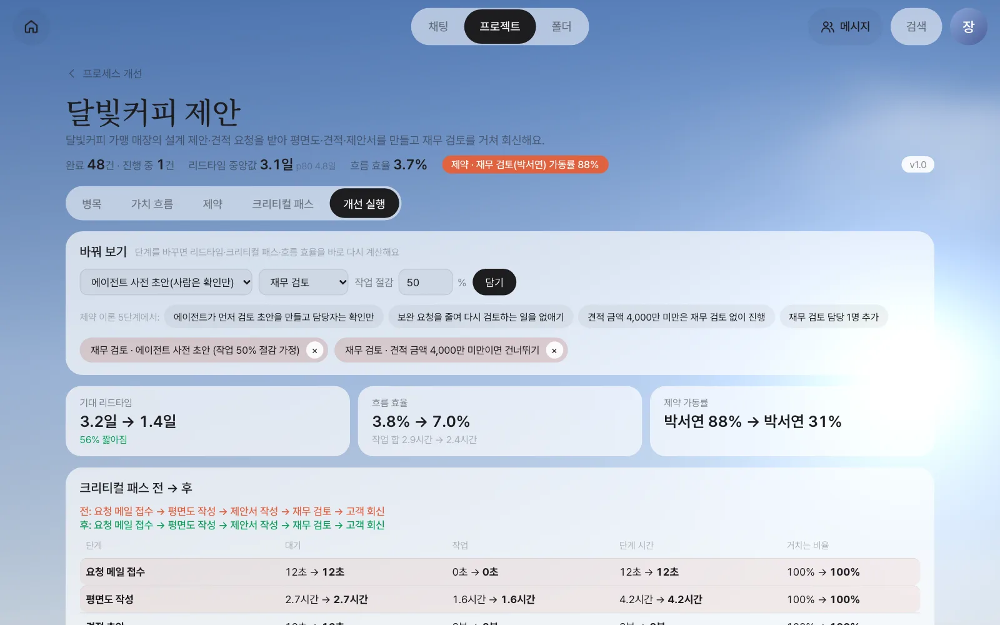
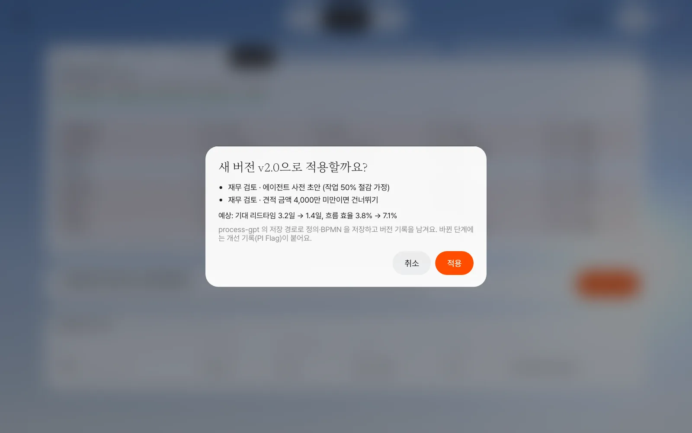
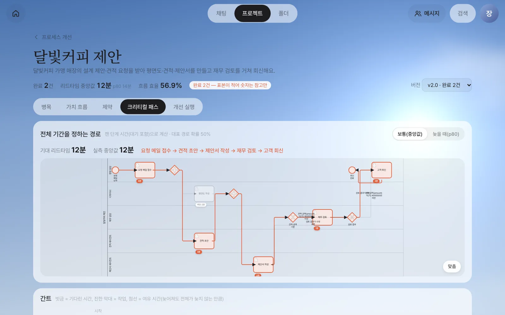
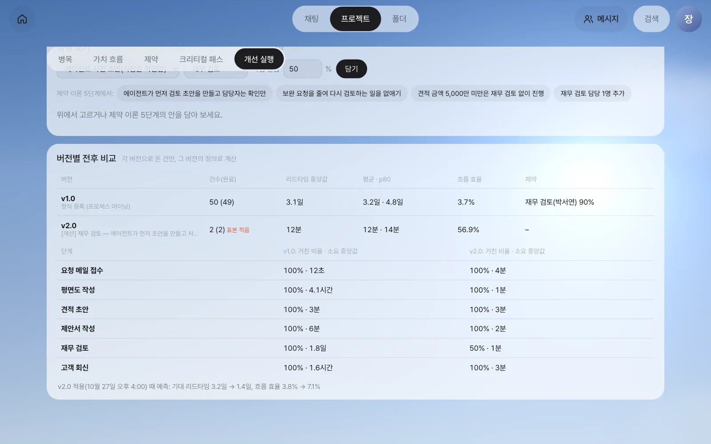

전체 기간을 정하는 단계의 사슬(크리티컬 패스)과 늦어져도 되는 여유 시간을 BPMN과 간트로 보고, 진행 중인 건이 언제 끝날지 셈합니다. 그다음 단계를 바꾸면 리드타임이 얼마나 줄지 미리 계산하고, 마음에 드는 안을 새 버전으로 적용해 실제로 돌려 봅니다.
크리티컬 패스 — 전체 기간을 정하는 사슬#
21장에서 제약(재무 검토)과 개선 후보를 찾았습니다. 이 장에서는 전체 기간이 어떤 단계들로 정해지는지 보고, 후보를 미리 계산한 뒤 실제로 적용합니다.
프로세스에는 동시에 진행되는 단계가 있습니다. 「달빛커피 제안」에서는 요청을 접수하면 평면도 작성(김민지)과 견적 초안(견적 에이전트)이 함께 시작되고, 둘 다 끝나야 제안서 작성으로 넘어갑니다.
┌─ 평면도 작성 4.2시간 ─┐
요청 메일 접수 ──┤ ├── 제안서 작성 6분 ── 재무 검토 3.0일 ── 고객 회신 1.7시간
└─ 견적 초안 3분 ─────┘
견적 초안이 3분 만에 끝나도 제안서 작성은 평면도를 기다립니다. 전체 기간은 가장 오래 걸리는 사슬이 정합니다. 이 사슬이 크리티컬 패스(critical path, 주 경로)입니다. 크리티컬 패스의 단계가 1시간 늦어지면 전체가 1시간 늦어지고, 크리티컬 패스가 아닌 단계는 조금 늦어져도 전체에 영향이 없습니다.
이것을 계산하는 방법을 CPM(Critical Path Method)이라 합니다. 단계마다 네 시각을 셉니다.
| 시각 | 뜻 | 견적 초안의 예 |
|---|---|---|
| ES 가장 이른 시작 | 앞 단계가 모두 끝나 시작할 수 있는 가장 이른 때 | 12초(접수 직후) |
| EF 가장 이른 끝 | ES + 단계 시간 | 3분 |
| LS 가장 늦은 시작 | 전체를 늦추지 않고 시작할 수 있는 가장 늦은 때 | 4.2시간 |
| LF 가장 늦은 끝 | 전체를 늦추지 않고 끝내야 하는 가장 늦은 때 | 4.2시간(평면도가 끝나는 때) |
여유 시간(slack, float) = LS − ES입니다. 견적 초안은 여유가 4.2시간이라, 그만큼 늦게 시작해도 전체가 늦어지지 않습니다. 여유가 0인 단계들이 크리티컬 패스입니다.
업무 프로세스의 CPM은 세 가지가 다르다#
공사 일정표의 CPM과 달리, 업무 프로세스에는 다음이 있습니다. Process GPT Lite는 BPMN 그대로 계산합니다.
| BPMN 기호 | 다루는 법 |
|---|---|
| 병렬 갈림길(+ 게이트웨이) | 모든 가지를 동시에. 합류는 가장 늦은 가지를 기다림 |
| 선택 갈림길(X 게이트웨이) — 앞으로 갈라짐 | 지난 기록에서 각 갈래로 간 비율로 경우를 나눠 각각 계산. 기대 리드타임 = Σ 비율 × 그 경우의 길이. 단계마다 “크리티컬 확률”(크리티컬이었던 경우의 비율 합) |
| 선택 갈림길 — 되돌아감(수정 요청) | 되돌아간 비율 p로 평균 p ÷ (1 − p)번 더 거친다고 보고, 그만큼의 시간을 “보완 재작업”으로 더함 |
단계 시간은 잰 시간입니다. 그 단계에 도달해 끝날 때까지, 대기를 포함한 실제 시간입니다. 「보통(중앙값)」과 「늦을 때(p80)」 두 가지로 볼 수 있습니다.
따라 하기 1 — 크리티컬 패스 보기#
개선 화면의 「크리티컬 패스」 탭을 엽니다.

| 화면 | 값 |
|---|---|
| 기대 리드타임 | 3.2일 (실측 중앙값 3.1일 — 계산이 기록과 맞는지 확인하는 숫자) |
| 크리티컬 패스 | 요청 메일 접수 → 평면도 작성 → 제안서 작성 → 재무 검토 → 고객 회신 |
| 여유가 있는 단계 | 견적 초안(여유 4.2시간) |
아래 간트와 표에 단계마다 ES·EF·LS·LF·여유가 나옵니다. 빗금은 기다린 시간, 진한 막대는 작업 시간입니다.

| 단계 | ES | EF | 여유 | 크리티컬 확률 |
|---|---|---|---|---|
| 평면도 작성 | 12초 | 4.2시간 | 0 | 100% |
| 견적 초안 | 12초 | 3분 | 4.2시간 | 0% |
| 제안서 작성 | 4.2시간 | 4.3시간 | 0 | 100% |
| 재무 검토 | 4.3시간 | 3.0일 | 0 | 100% |
| 보완 재작업 14% | 3.0일 | 3.1일 | 0 | 100% |
| 고객 회신 | 3.1일 | 3.2일 | 0 | 100% |
크리티컬 패스 3.2일 가운데 재무 검토가 2.8일입니다. 재무 검토의 단계 시간 대부분이 빗금이라는 것이 20장·21장과 같은 이야기를 다른 각도에서 보여 줍니다.
오른쪽 위를 「늦을 때(p80)」로 바꾸면 각 단계의 p80 시간으로 다시 계산합니다. 기대 리드타임이 4.9일이 되고, 평면도 작성이 20시간으로 늘어납니다. 그래도 견적 초안은 여전히 여유가 있습니다.
진행 중인 건은 언제 끝나나#
진행 중인 건은 이미 끝난 단계의 실제 시간, 지금 하고 있는 단계의 남은 시간(보통 걸리는 시간 − 지난 시간), 나머지는 잰 시간으로 다시 계산합니다. 화면 아래 「진행 중인 건의 남은 크리티컬 패스」에 나옵니다.

사진의 광화문 53호점은 견적 에이전트가 실제로 견적 초안을 쓰는 중입니다. 지금 단계는 몇 분이면 끝나지만, 남은 3.3일의 대부분은 앞으로 거칠 재무 검토 앞에서 보통 기다리는 시간입니다. 예상 완료 시각은 지난 기록의 달력 시간(밤·주말 포함)으로 셈한 값입니다.
따라 하기 2 — 개선 실행, 바꾸기 전에 미리 계산하기#
「개선 실행」 탭에서 단계 하나를 바꾸면 리드타임·크리티컬 패스·흐름 효율·제약 가동률을 바로 다시 계산합니다. 프로세스는 아직 바뀌지 않습니다.
| 바꾸기 | 계산에서 바뀌는 것 |
|---|---|
| 에이전트로 자동화 | 그 단계의 대기·작업이 이 프로세스 에이전트 단계의 보통 시간으로. 담당자에게 오던 일이 빠짐 |
| 에이전트 사전 초안(사람은 확인만) | 사람의 작업 시간이 절감 비율만큼 줄고, 그 사람의 처리 능력이 늘어남 |
| 기준 미만이면 건너뛰기 | 단계 앞에 갈림길이 생김. 기준 미만 비율(지난 기록의 값)만큼 그 단계를 거치지 않음 |
| 앞 단계와 동시에 | 바로 앞 단계와 병렬로 |
| 담당 인원 추가 | 같은 일을 하는 사람이 한 명 더 |
| 보완 요청 줄이기 | 되돌아가는 비율이 줄어 다시 거치는 일이 줄어듦 |
대기는 21장에서 본 두 종류로 나눠 계산합니다. 차례 기다림만 대기열 공식(가동률 ÷ (1 − 가동률)과 같은 모양, 여러 명이면 인원수를 반영한 공식)으로 늘고 줄며, 담당자 기다림(이 일을 하는 시간대를 기다린 시간)은 그대로 둡니다. 사람 수나 일의 양을 바꿔도 “다음 날 오전까지 기다리는” 구조는 그대로이기 때문입니다.
시험 1 — 평면도를 자동화하면?#
종류를 「에이전트로 자동화」, 단계를 「평면도 작성」으로 고르고 「담기」를 누릅니다.
| 전 | 후 | |
|---|---|---|
| 기대 리드타임 | 3.2일 | 3.0일 |
| 평면도 작성 단계 시간 | 4.2시간 | 4분 |
| 흐름 효율 | 3.8% | 1.9% |
| 크리티컬 패스 | … → 평면도 작성 → … → 재무 검토 → … | 같음 |
평면도는 크리티컬 패스 위에 있으므로 그 몇 시간만큼 줄지만, 재무 검토 앞 대기는 그대로라 효과가 작습니다. 흐름 효율은 오히려 내려갑니다 — 사람이 1.6시간 하던 일을 에이전트가 4분에 하니 작업 합은 줄었는데, 리드타임은 거의 그대로이기 때문입니다. 흐름 효율은 “얼마나 덜 기다리나”를 보는 지표라, 기다림을 줄이지 않는 개선에는 좋아지지 않습니다. 21장 확인 문제 3의 답을 숫자로 확인한 셈입니다. 칩의 ×로 빼 둡니다.
시험 2 — 제약을 겨냥하기#
「제약 이론 5단계에서:」 버튼 중 「에이전트가 먼저 검토 초안을 만들고 담당자는 확인만」과 「견적 금액 4,000만 미만은 재무 검토 없이 진행」을 누릅니다. 두 안이 함께 담깁니다.
금액 기준(4,000만)은 지난 기록에서 계산하므로 실습 데이터에 따라 5,000만처럼 다르게 나올 수 있습니다.

| 전 | 후 | |
|---|---|---|
| 기대 리드타임 | 3.2일 | 1.4일 |
| 흐름 효율 | 3.8% | 7.0% |
| 제약 가동률 | 박서연 88% | 박서연 31% |
| 재무 검토 단계 시간 | 2.8일 | 1.5일 |
| 재무 검토를 거치는 비율 | 100% | 71% |
재무 검토가 1.5일 남는 이유도 보입니다. 박서연의 차례 기다림은 거의 사라졌지만, 검토를 오전에만 하는 담당자 기다림은 그대로이기 때문입니다. 다음 개선 후보(검토 시간대를 하루 두 번으로)가 여기서 나옵니다.
흐름 효율이 3.7%가 아니라 3.8%인 이유
가치 흐름 지도의 3.7%는 지난 건들의 실제 평균이고, 여기 3.8%는 크리티컬 패스 계산(중앙값 기준)으로 낸 값입니다. 전·후를 같은 계산으로 비교하려고 “전”도 계산값을 씁니다.
개선안 적용 — 새 버전 만들기#
「개선안 적용」을 누르면 확인 창이 뜹니다. 무엇이 바뀌는지와 예상 효과를 보고 「적용」을 누릅니다. 프로세스 담당자(소유자)와 관리자만 할 수 있습니다.

적용하면 다음이 일어납니다.
| 무엇 | 어떻게 |
|---|---|
| 프로세스 정의 | 재무 검토 앞에 「견적 금액 기준」 갈림길이 생기고(4,000만 미만 → 고객 회신으로), 재무 검토는 에이전트가 먼저 초안을 채우는 단계가 됩니다. 17장에서 대화로 만든 프로세스를 저장할 때와 같은 저장 경로로 정의와 BPMN을 저장합니다 |
| 버전 | 새 버전 v2.0이 기록되고(바꾼 내용·이전 버전 연결), 새로 시작하는 건부터 새 버전으로 돕니다 |
| 개선 기록 | 바뀐 단계에 개선 기록(PI Flag)이 붙어 Process GPT 화면에서도 개선한 단계를 모아 볼 수 있습니다 |
진행 중인 건은 시작한 버전대로 끝납니다
적용 전에 시작한 건은 끝날 때까지 시작한 때의 버전(v1.0)의 정의로 진행하고, 새 버전은 적용 뒤에 새로 시작하는 건부터 씁니다. 그래서 기준을 바꿔도 이미 돌고 있는 건의 결재 경로가 중간에 바뀌지 않습니다. 개선 화면과 아래의 버전별 비교도 건마다 시작한 때의 버전으로 묶어 계산합니다.
화면 위쪽의 버전 선택에서 「v2.0」을 고르면 새 버전의 BPMN과 그 버전으로 시작한 건만으로 계산한 결과가 나옵니다.

바꾼 뒤 — 버전별 비교#
실습에서는 적용 뒤 새 요청 두 건을 실제로 돌렸습니다.
| 건 | 견적 금액(견적 에이전트) | 무슨 일이 있었나 |
|---|---|---|
| 익선동 55호점(25㎡) | 3,162만 5천 원 | 4,000만 미만 → 갈림길에서 재무 검토를 건너뛰고 바로 고객 회신 |
| 연남 56호점(80㎡) | 1억 1,000만 원 | 재무 검토에 도달하자 재무 검토 보조 에이전트가 먼저 초안을 채움(“견적 산수는 맞지만 고객 예산 4,000만 원을 크게 넘는다 — 수정 요청”). 박서연이 열어 확인한 뒤 승인으로 제출 |
연남 56호점의 재무 검토는 에이전트 초안 26초, 박서연의 확인 49초로 나뉘어 기록됐습니다(20장의 분해 그대로). 「개선 실행」 탭 아래의 버전별 비교가 두 버전을 나란히 보여 줍니다.

| v1.0 | v2.0 | |
|---|---|---|
| 건수(완료) | 50 (49) | 2 (2) — 표본 적음 |
| 리드타임 중앙값 | 3.1일 | 12분 |
| 흐름 효율 | 3.7% | 56.9% |
| 재무 검토를 거친 비율 · 소요 중앙값 | 100% · 1.8일 | 50% · 1분 |
맨 아래 줄에는 적용할 때의 예측(기대 리드타임 3.2일 → 1.4일, 흐름 효율 3.8% → 7.1%)이 남아 있어, 건이 쌓인 뒤 예측과 실제를 맞대어 볼 수 있습니다.
표본이 적을 때
실습의 v2.0 두 건은 사람 단계까지 곧바로 처리해 몇 분 만에 끝났습니다. 석 달 동안 쌓인 v1.0의 리드타임(며칠)과 같은 잣대로 비교하면 효과가 터무니없이 부풀려집니다 — 위 표의 12분과 56.9%가 그렇습니다. 완료가 10건이 안 되면 화면이 「표본 적음」을 붙입니다. 지금 믿을 수 있는 것은 경로가 바뀌었다는 사실(작은 건은 재무 검토를 건너뜀)이고, 리드타임 효과는 몇 주 쌓인 뒤 이 표와 적용 때의 예측을 다시 비교해 판단합니다. 그다음은 21장의 5단계 중 반복 — 제약이 어디로 옮겨 갔는지 다시 찾는 것입니다.
다음 장으로#
여기까지가 6부 「프로세스 개선」입니다. 장진영 팀장은 채팅과 편집기, 개선 화면만으로 즉흥적으로 하던 일을 정식 프로세스로 만들고 고쳤습니다. 다음 7부에서는 이 시스템을 키우고 운영하는 쪽으로 시야를 넓힙니다. 첫 장은 에이전트가 일하는 작업 폴더를 직접 여는 에이전트 작업실입니다(23장).
확인 문제
- 견적 초안의 여유가 4.2시간입니다. 견적 에이전트가 고장 나 견적 초안이 3시간 늦게 끝나면 전체 리드타임은 어떻게 될까요? 6시간 늦으면요?
- 재무 검토에서 14%가 수정 요청으로 되돌아갑니다. 평균 몇 번 더 거친다고 보나요? 되돌아가는 비율이 50%라면요?
- 미리 계산에서 「재무 검토 담당 1명 추가」를 담아 보세요. 리드타임이 1.4일보다 많이 줄지 않는 이유를 “두 종류의 대기”로 설명해 보세요.
답
- 3시간 늦어도 여유(4.2시간) 안이라 전체는 그대로입니다. 6시간 늦으면 여유를 1.8시간 넘으므로 전체가 약 1.8시간 늦어지고, 그때는 견적 초안이 크리티컬 패스가 됩니다.
- p ÷ (1 − p) = 0.14 ÷ 0.86 ≈ 0.17번 더 거칩니다(여섯 건 중 한 건꼴로 한 번 더). 50%라면 0.5 ÷ 0.5 = 1번 — 평균적으로 모든 건이 한 번씩 더 거치는 셈입니다.
- 사람을 더하면 앞 건이 끝나기를 기다리는 차례 기다림은 줄지만, 검토를 하루 중 정해진 시간대에만 하는 데서 오는 담당자 기다림은 그대로 남기 때문입니다. 남은 대기를 줄이려면 검토 시간대 자체를 바꿔야 합니다.